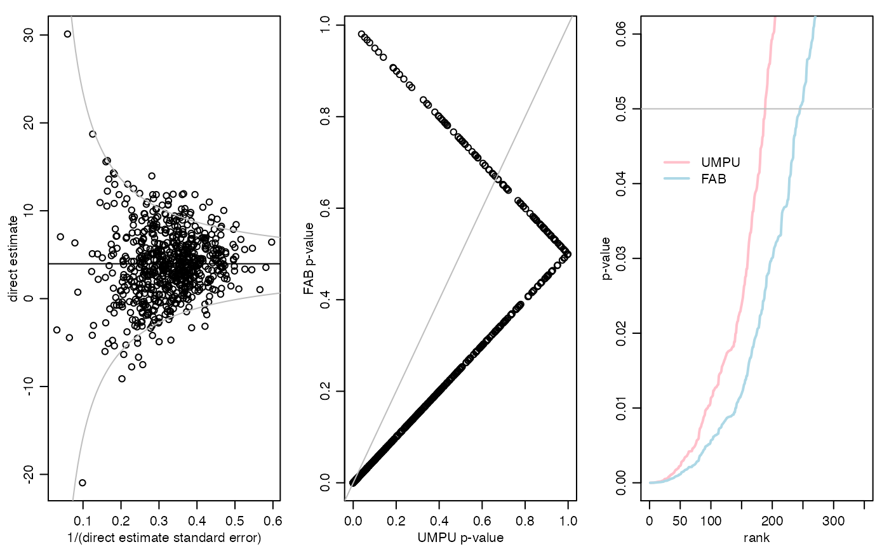

\(p\)-values for group-level slopes in ANCOVA models" />
exampleInteraction.RmdAdaptive FAB \(p\)-values are constructed for evaluating significance of a slope parameter for each level of a categorical variable. Specifically, we evaluate the significance of the relationship between student-level scores on a standardized exam and student-level SES scores for each school in the 2002 ELS study. Information is shared across schools using an exchangeable (i.i.d.) linking model for the school-level effects. This document serves as the replication code for the example in Section 4.2 of the article “Smaller \(p\)-values via indirect information” (Hoff 2019).
The data for this example are from the 2002 Educational Longitudinal Survey, data from which can be obained at https://nces.ed.gov/surveys/els2002/. A subset of the data needed to replicate the example is available on my website and can be loaded using the following command:
Now take a look at all the variables:
els[1:10,]## school flp urbanicity sctrl enrollment region female ses nateng
## 1 1011 40.5 1 1 6 1 1 -0.23 1
## 2 1011 40.5 1 1 6 1 1 0.69 0
## 3 1011 40.5 1 1 6 1 1 -0.68 1
## 4 1011 40.5 1 1 6 1 1 -0.89 1
## 5 1011 40.5 1 1 6 1 1 -1.28 0
## 6 1011 40.5 1 1 6 1 0 -0.93 0
## 7 1011 40.5 1 1 6 1 0 0.36 1
## 8 1011 40.5 1 1 6 1 0 -0.24 1
## 9 1011 40.5 1 1 6 1 0 -0.85 1
## 10 1011 40.5 1 1 6 1 0 -1.07 1
## pared mscore rscore cscore rural suburban urban public catholic private
## 1 5 52.11 59.53 56.21 0 0 1 1 0 0
## 2 5 57.65 56.70 57.66 0 0 1 1 0 0
## 3 2 66.44 64.46 66.50 0 0 1 1 0 0
## 4 2 44.68 48.69 46.46 0 0 1 1 0 0
## 5 1 40.57 33.53 36.17 0 0 1 1 0 0
## 6 2 35.04 28.85 30.72 0 0 1 1 0 0
## 7 6 50.71 40.80 45.46 0 0 1 1 0 0
## 8 2 66.17 68.28 68.39 0 0 1 1 0 0
## 9 2 39.43 45.73 42.07 0 0 1 1 0 0
## 10 1 46.17 41.05 43.17 0 0 1 1 0 0
## rn rm rs rw pcgrad
## 1 1 0 0 0 0
## 2 1 0 0 0 0
## 3 1 0 0 0 0
## 4 1 0 0 0 0
## 5 1 0 0 0 0
## 6 1 0 0 0 0
## 7 1 0 0 0 1
## 8 1 0 0 0 0
## 9 1 0 0 0 0
## 10 1 0 0 0 0First we do an overall \(F\)-test to evaluate if there is heterogeneity in the relationship between rscore and ses after controlling for the other variables.
fit1<-lm(rscore ~ as.factor(school) + ses + as.factor(school)*ses +
female + nateng + pcgrad, data=els)
fit0<-lm(rscore ~ as.factor(school) + ses +
female + nateng + pcgrad, data=els)
anova(fit0,fit1)## Analysis of Variance Table
##
## Model 1: rscore ~ as.factor(school) + ses + female + nateng + pcgrad
## Model 2: rscore ~ as.factor(school) + ses + as.factor(school) * ses +
## female + nateng + pcgrad
## Res.Df RSS Df Sum of Sq F Pr(>F)
## 1 13418 929333
## 2 12735 871675 683 57658 1.2333 4.549e-05 ***
## ---
## Signif. codes: 0 '***' 0.001 '**' 0.01 '*' 0.05 '.' 0.1 ' ' 1The \(p\)-value is tiny, suggesting that schools do indeed vary in terms of the relationship between these two variables. Therefore, it is not appropriate to just test for an overall effect of SES on reading score and then use that to claim that the effect is present for each school separately.
Consider the linear regression model \[ Y_{i,j} = \gamma_j + \alpha^\top w_{i,j} + \beta_j x_{i,j} + \sigma \epsilon_{i,j} \] where \(Y_{i,j}\) is the reading score of the \(i\)th student in school \(j\) and \(x_{i,j}\) is the SES score of that student. The standard \(p\)-value for evaluating \(H_j:\beta_j=0\) is obtained from the distribution of the OLS estimate of \(\beta_j\). Here, we obtain the OLS estimates and standard \(p\)-values. Then with the linking model \(\beta_1,\ldots, \beta_p \sim\) i.i.d. \(N(\mu,\tau^2)\), we construct FAB \(p\)-values.
First we gather the variables:
y<-els$rscore
g<-els$school
x<-els$ses
W<-as.matrix(els[,c("female","nateng","pcgrad") ] )
ug<-sort(unique(g))
G<-diag(length(ug))[match(g,ug),]
GX<-sweep(G,1,x,"*")y is an \(n\)-vector of the outcome for each student;G is an \(n\times p\) binary matrix indicating which of the \(p\) schools each student is in;W is an \(n\times q\) matrix of other student-level explanatory variables;GX is an \(n\times p\) matrix obtained by multiplying each row of \(G\) by the corresponding students SES score. This is the interaction variable.The basic strategy is as follows: * Obtain the OLS estimates for the GX variables in a linear regression model that includes G, W and GX as predictors. The OLS estimates are our direct data for each \(\beta_j, j=1,\ldots, p\). * For each \(\hat\beta_j\), obtain estimates of the mean \(\mu\) and variance \(\tau^2\) in the linking model \(\beta_1,\ldots, \beta_p \sim\) i.i.d. \(N(\mu, \tau^2)\), using data that is uncorrelated with \(\hat\beta_j\).
* Use the parameter estimates to construct the FAB \(p\)-value for group \(j\).
I have written the following functions to do all this. Here is the main function:
pFABreg<-function(y,X,W=NULL){
## FAB p-values for the regression coefficients associated with $X$
## assuming an i.i.d. normal prior. The matrix W can include other
## regressors.
## Future work: Allow for information splitting for estimation
## of s2, the error variance.
p<-ncol(X)
XW<-cbind(X,W)
fit<-lm(y~ -1+XW)
betaOLS<-fit$coef[1:p]
df<-nrow(XW)-ncol(XW)
s2<-sum(fit$res^2)/df
V<-solve(crossprod(XW))[1:p,1:p]
v<-diag(V)
PSI<-NULL
for(j in 1:p){
G<-MASS::Null(V[,j])
PSI<-rbind(PSI,mmleEXG(t(G)%*%betaOLS, t(G)%*%rep(1,p), t(G)%*%V%*%G ) )
if(j%%10==0){ cat(j/p,"\n") }
}
TSTAT<-betaOLS/sqrt(v*s2)
pU<-2*pt(-abs(TSTAT),df)
pF<-1-abs( pt(TSTAT+2*PSI[,1]*sqrt(v*PSI[,3])/PSI[,2],df) - pt(-TSTAT,df) )
RES<-cbind(betaOLS,v,s2,TSTAT,df,PSI,pU,pF)
colnames(RES)<-c("betaOLS","v unscaled","s2res","t-stat","df","mu","t2","s2mlik","pU","pF")
RES
}Here is a helper function that computes the MMLE of the parameters in the linking model:
mmleEXG<-function(y,x,V){
## mml estimation under the model
## $y \sim N(\theta,V \sigma^2)$
## $\theta \sim N( x \mu,\tau^2 I)$
## where $V$ is known
eV<-eigen(V)
E<-eV$vec
L<-eV$val
obj<-function(lt2s2){
t2<-exp(lt2s2[1])
s2<-exp(lt2s2[2])
G<-1/(t2+L*s2)
iVy<-E%*%( G*(t(E)%*%y) )
iVx<-E%*%( G*(t(E)%*%x) )
RSS<-sum(iVy*y) - sum(iVx*y)^2/sum(iVx*x)
ldet<-sum(log(G))
RSS - ldet
}
t2s2<-exp(optim(c(0,0),obj)$par) ; t2<-t2s2[1] ; s2<-t2s2[2]
G<-1/(t2+L*s2)
iVy<-E%*%( G*(t(E)%*%y) )
iVx<-E%*%( G*(t(E)%*%x) )
mu<-sum(iVx*y)/sum(iVx*x)
c(mu,t2,s2)
}Ok, now we compute all the FAB \(p\)-values. This will take a while.
pVALS<-pFABreg(y,GX,cbind(G,W))## 0.01461988
## 0.02923977
## 0.04385965
## 0.05847953
## 0.07309942
## 0.0877193
## 0.1023392
## 0.1169591
## 0.1315789
## 0.1461988
## 0.1608187
## 0.1754386
## 0.1900585
## 0.2046784
## 0.2192982
## 0.2339181
## 0.248538
## 0.2631579
## 0.2777778
## 0.2923977
## 0.3070175
## 0.3216374
## 0.3362573
## 0.3508772
## 0.3654971
## 0.380117
## 0.3947368
## 0.4093567
## 0.4239766
## 0.4385965
## 0.4532164
## 0.4678363
## 0.4824561
## 0.497076
## 0.5116959
## 0.5263158
## 0.5409357
## 0.5555556
## 0.5701754
## 0.5847953
## 0.5994152
## 0.6140351
## 0.628655
## 0.6432749
## 0.6578947
## 0.6725146
## 0.6871345
## 0.7017544
## 0.7163743
## 0.7309942
## 0.745614
## 0.7602339
## 0.7748538
## 0.7894737
## 0.8040936
## 0.8187135
## 0.8333333
## 0.8479532
## 0.8625731
## 0.877193
## 0.8918129
## 0.9064327
## 0.9210526
## 0.9356725
## 0.9502924
## 0.9649123
## 0.9795322
## 0.994152Save some results:
resultsInteraction<-list( BOLS=pVALS[,"betaOLS"],
N=c(table(g)),
VUNS=pVALS[,"v unscaled"],
S2U=pVALS[,"s2res"],
T=pVALS[,"t-stat"],
DF=pVALS[,"df"],
pU=pVALS[,"pU"],
ETHETA=pVALS[,"mu"],
TAU=sqrt(pVALS[,"t2"]),
SIGMA=sqrt(pVALS[,"s2mlik"]),
pF=pVALS[,"pF"])
save(resultsInteraction,file="resultsInteraction.RData")Summary of some results:
par(mfrow=c(1,3),mar=c(3,3,1,1),mgp=c(1.75,.75,0))
plot( sqrt(1/(resultsInteraction$VUNS*resultsInteraction$S2U)), resultsInteraction$BOLS,
xlab="1/(direct estimate standard error)", ylab="direct estimate" )
abline(h=mean(resultsInteraction$ETHETA))
ise<-seq(.05,.65,length=100)
lines( ise,mean(resultsInteraction$BOLS) + qnorm(.975)/ise,col="gray" )
lines( ise,mean(resultsInteraction$BOLS) - qnorm(.975)/ise,col="gray" )
pU<-resultsInteraction$pU
pF<-resultsInteraction$pF
sigU<-sum(pU<.05)
sigF<-sum(pF<.05)
plot(pU,pF,xlab="UMPU p-value",ylab="FAB p-value")
abline(0,1,col="gray")
plot(sort(pU),type="l",xlim=c(0,350),ylim=c(0,.06),lwd=2,col="pink",
xlab="rank",ylab="p-value")
lines(sort(pF),col="lightblue",lwd=2)
abline(h=.05,col="gray")
legend(5,.045,lwd=c(2,2),col=c("pink","lightblue"),legend=c("UMPU","FAB"),
bty="n")